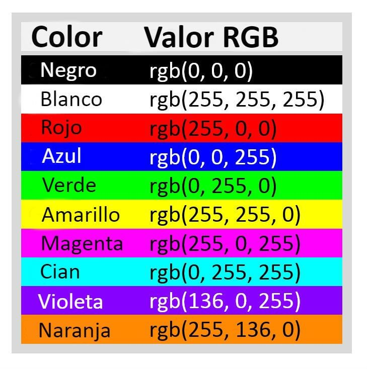

COLORES EN CSS3
IDEAS CLAVE
- Keywrods:
Red, Blue, White, Yellow, Green... etc. -
Hexadecimal:
0123456789ABCDEF - 0 es negro & F es blanco -
RGB-RGBA:
rgb”a”:(255,0,0,”1”) -
HSL-HSLA:
La expresión es: hsl(0, 100%, 50%)
NOTAS DE LA CLASE
La forma de representar los colores es el con el sistema de sRGB (Estándar Red-Green-Blue).
Ya que permite seleccionar los colores mediante valores del 0 al 225, teniendo un total de 256 niveles
de color y 16,777,216 tonos de color.
Existen diferentes maneras de poder representar o elegir los colores que necesitas en CSS, ya sea de manera:
-
Keywords:
Como su nombre indica, permite seleccionar colores utilizando nombres clave para usarlas, ejemplo: Red o Whitesmoke. - Hexadecimal:
Se maneja mediante 16 caracteres (0123456789ABCDEF), donde el 0 representa la ausencia de color (negro) y el F el maximo color representable (blanco). - RGB y RGBa:
De manera simple, indica que utiliza los valores Red-Blue-Green para combinar y generar un color, asi como tambien Alfa, que es la transparencia del color. - HSL y HSLA:
Hue, Saturation y Lightness, son de manera en español: Tono, Saturacion y Brillo. Permite ajustar tanto los tonos como diferentes variaciones del color y su Brillo, teniendo un control mas especifico del color a representar en una pagina web.- Hue se mide en grados: 0° a 359°
- Saturation y Lightness en porcentajes de 0 a 100%
